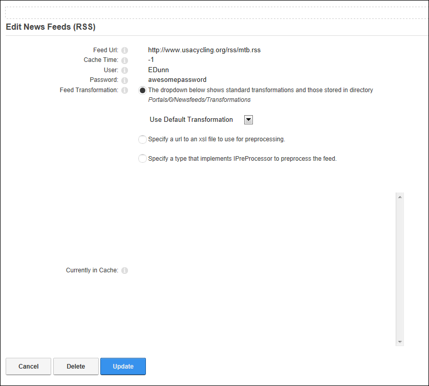

Adding News Feeds
How to add one or more syndicated news feeds to the News Feeds (RSS) module.
- Select
 Edit >
Edit >  Edit Newsfeeds from the module actions menu. This opens the Edit News Feeds (RSS) page.
Edit Newsfeeds from the module actions menu. This opens the Edit News Feeds (RSS) page.
- Click the Add Feed button. This displays the input fields for adding a news feed.
- In the Feed Url text box, enter the URL of the news feed. This is the only required field unless authentication (user and password details) is required to access the feed. If authentication isn't required, you can skip to Step 7 to accept the default settings.

- Optional. In the Cache Time text box, enter the number of minutes between refreshes of this feed - OR - Enter -1 to use the default setting as set by the feed provider.
- Optional. If security information is required to authenticate your access to the news feed, complete the following fields:
- In the User text box, enter the user account details supplied by the news feed provider.
- In the Password text box, enter the password supplied by the news feed provider.
- Optional. At Feed Transformation, select from the following options of these from the drop down list:
- The dropdown below shows standard transformations and those stored in directory../../../../Resources/Newsfeeds/Transformations: Select a standard transformation type from these options:
- Use Default Transformation: Select to use the default transformation. This is the default option.
- ATOM 1.0 Transformation: Select for feeds using this transformation type.
- RDF Transformation: Select for feeds using this transformation type.
- RSS 0.91 Transformation: Select for feeds using this transformation type.
- Internal Twitter Transformation: Select for a Twitter RSS feed. This transforms tweets into correctly formatted links to tags and people.
- Specify a url to an xsl file to use for preprocessing: Select this option to define a pre-processor for the feed. This allows you to make non-compliant feeds compliant using an XSL transformation (also called a pre-processor).
- Set the link to the URL where the transformation (XSL) file is located (See "Setting a URL Link") - OR - Set the link to the internal file (See "Setting a File Link" ). Note: A "failure to compile the XSL" error may be displayed. In this case, use the URL option to point to the XSL sheet.
- Specify a type that implements IPreProcessor to preprocess the feed: Select this option if you have a custom preprocessor that implements the IPreProcessor interface. You will need a developer to create one.
- In the text box, enter the name of your preprocessor. E.g. CustomPreprocessor

-
Click the Update button. This displays the name of the newly added feed.

- Optional. Repeat Steps 2-7 to add additional feeds.

- Click the Return button to return to the page.

The Newly Added News Feed
Tip: You can also add your own XSL transformations to portals/[id]/Newsfeeds/Transformations/ and they will show in the drop down list.